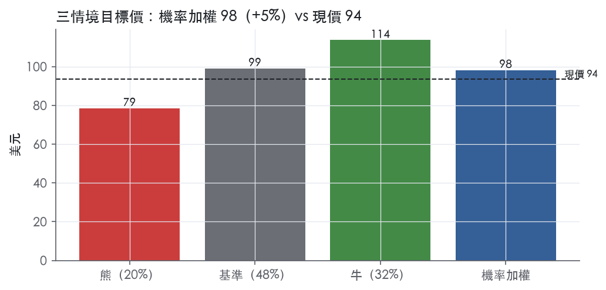
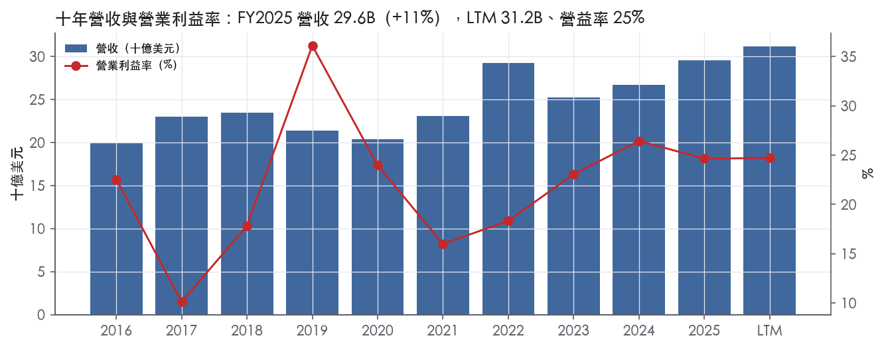
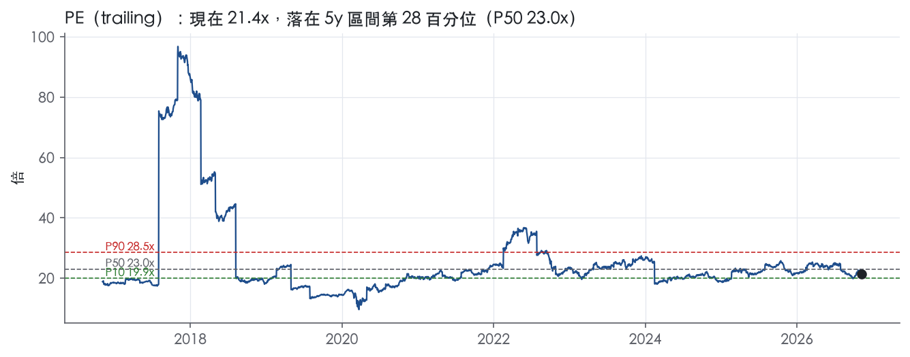
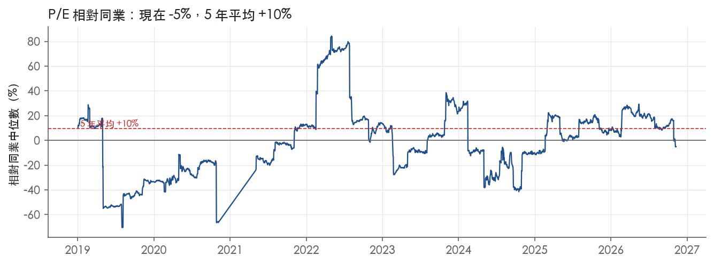
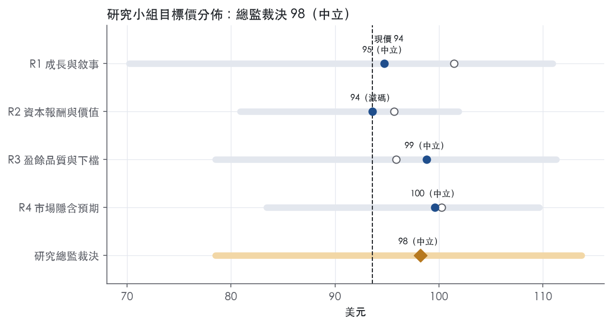
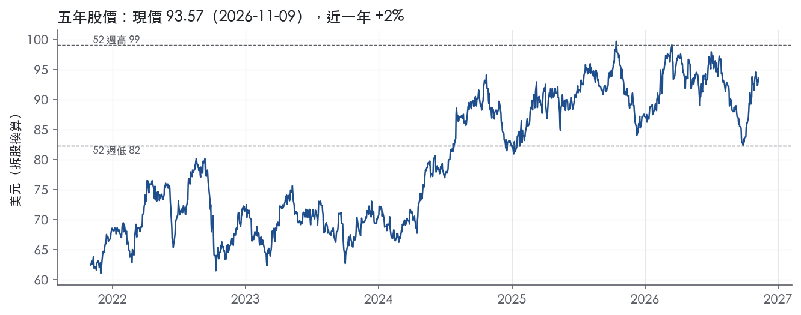

評等總表 › 公用事業 › SO
盈餘被低估但報酬貼門檻，中性｜評等 中立｜目標價 98
| 報告日 | 評等 | 目標價 | 當時股價 | 超額報酬 |
|---|---|---|---|---|
| 2026-11-09 | 中立 | 98.22 | 93.57 | -0.4% |
| 2026-10-09 | 中立 | 87.04 | 86.17 | -4.7% |
| 快評 | 動作 | 結論 |
|---|---|---|
| 2026-11-05 | 維持 | Q3獲利高於我們預測，維持中立 |
| 評等 | 中立 |
| 12 個月目標價 | 98 美元 |
| 現價 | 93.57 美元（2026-11-09） |
| 預期報酬 | 股價 +5.0%＋股息 3.2%＝總報酬 +8.2%；同業籃門檻 8.6%，超額 -0.4% |
| 估值方法 | P/E 20.8x，套在第 5–8 季的EPS（也就是一年後的未來四季） |
| 三情境 | 熊 79／基準 99／牛 114 |
| 研究流程 | 四位研究員兩輪辯論＋研究總監裁決 |
| 資料來源 | SEC EDGAR XBRL、Tiingo、FRED（全免費） |
盈餘被低估但報酬貼門檻，中性（研究總監裁決，四位研究員兩輪辯論後）
評等 中立｜12 個月目標價 98 美元（總監三情境機率加權 100 與研究員中位數 97 各半）｜現價 93.57（2026-11-09）
預期報酬：股價 +5.0%＋股息 3.2%＝總報酬 +8.2%。同業籃門檻 8.6%，超額 -0.4%。
估值方法：P/E 20.8x，套在第 5–8 季的EPS（也就是一年後的未來四季）。三情境：熊 79（20%）／基準 99（48%）／牛 114（32%）。
什麼會讓研究總監改變看法：FY2026 10-K顯示利息保障回到2.40x以上且2027年融資計畫不含新增普通股，倍數上調至P50–P75之間、立場轉偏多；Georgia PSC對新建成本出現第二起不准回收或任一評等機構降評，改採熊情境並上調熊機率。
| 過去四季（實際，FY2026Q3） | 未來四季 | 第 5–8 季 | 第 9–12 季 | |
|---|---|---|---|---|
| 營收（B） | 31.2B | 33.5B | 35.8B | 38.0B |
| 營收成長 | 7.9% | 7.3% | 7.0% | 6.0% |
| 營業利益率 | 24.7% | 29.0% | 29.0% | 29.0% |
| EPS（美元） | 4.37 | 4.50 | 4.76 | 4.96 |
| EPS 成長 | 8.5% | 3.1% | 5.9% | 4.1% |
| 每股股息（美元） | 3.00 | 3.00 | 3.00 | 3.00 |
| P/E（現價） | 21.4x | 20.8x | 19.6x | 18.9x |
| 股息殖利率（現價） | 3.2% | 3.2% | 3.2% | 3.2% |
過去四季為申報數字；預測為研究總監的假設、程式計算。倍數與殖利率都用現價計算，用來看現價對應各期獲利的高低。
| 項目 | 上次（2026-10-13） | 這次（2026-11-10） | 變動 |
|---|---|---|---|
| 評等 | 中立 | 中立 | ＝ |
| 機率加權目標價（美元） | 87 | 98 | +12.8% |
| 超額報酬 | -4.7% | -0.4% | +4.3 pp |
| 目標倍數 | 19.5x | 20.8x | — |
| 未來四季營收成長 | 5.0% | 7.3% | +2.3 pp |
| 未來四季營益率 | 29.0% | 29.0% | +0.0 pp |
| 未來四季 EPS（美元） | 4.20 | 4.50 | +7.1% |
| 熊／基準／牛機率 | 22／50／28 | 20／48／32 | — |
程式計算；「未來四季」各自從當次報告的資料起點算。研究總監逐點說明見第八章「與上次報告比較」。
| 情境 | 機率（歷史） | 故事 | 未來四季營收成長 | 第 5–8 季營益率 | 倍數 | 目標價 | 股價漲跌 |
|---|---|---|---|---|---|---|---|
| 熊 | 20%（16%） | 風險表第1條Georgia PSC否決部分新建成本、第2條負荷延後、第5條在低價發股；倍數向AEP 5年中位18.5x看齊；下行路徑Baa利差2.30 | 6.3% | 28.0% | 18.5x | 79 | -16.1% |
| 基準 | 48%（52%） | 費率基礎複利與9GW爬坡讓Q5–Q8 EPS高於LTM 4.37，扣4.5%稀釋與利息增量後中個位數成長，倍數停在前瞻帶P50 | 7.3% | 29.0% | 20.8x | 99 | 5.9% |
| 牛 | 32%（32%） | 大用電戶提前爬坡、三年營收皆逾7%、Georgia PSC完整認列新建資產、相對同業折價收斂，倍數落在P50–P75之間；上行路徑10年債4.60 | 8.5% | 29.5% | 22.3x | 114 | 21.5% |
目標價由程式依研究總監的驅動與倍數計算；機率由研究總監給定。括號內是歷史頻率：把這檔股票過去十年 12 個月報酬的波動形狀，置中在基準情境，結果落在各情境附近的比例。

四位研究員用不同方法各自估值，回應研究總監的質疑後交出第二輪，最後由總監逐點裁決。各研究員的主張見第七章，裁決理由見第八章，完整論證見《研究底稿》。
| 立場（一輪→二輪） | 加權目標價（一輪→二輪） | 評等（一輪→二輪） | 第二輪倍數 | 熊～牛目標價 | |
|---|---|---|---|---|---|
| R1 成長與敘事 | 看多→中性 | 101→95 | 中立→中立 | 20.8x | 70～111 |
| R2 資本報酬與價值 | 中性→中性 | 96→94 | 中立→減碼 | 20.8x | 81～102 |
| R3 盈餘品質與下檔 | 中性→中性 | 96→99 | 中立→中立 | 20.5x | 79～111 |
| R4 市場隱含預期 | 看多→看多 | 100→100 | 中立→中立 | 21.0x | 83～110 |
| 研究總監裁決 | 中性 | 98 | 中立 | 20.8x | 79～114 |
目標價由程式依各自的驅動與倍數計算；評等＝機率加權總報酬 − 同業籃門檻。
Southern Company 是一家控股公司，旗下擁有三家傳統垂直整合電力公司（Alabama Power、Georgia Power、Mississippi Power）、Southern Power，以及 Southern Company Gas¹。傳統電力公司各自在東南三州提供零售電力服務，並對東南地區的批發客戶供電¹。Southern Power 從事發電資產（含儲能專案）的開發、建設、收購、擁有、運營與管理，並以市場化費率在批發市場銷售電力¹。Southern Company Gas 的核心業務是在四州（伊利諾、喬治亞、維吉尼亞、田納西）透過天然氣配氣公用事業銷售天然氣¹。整體上，公司服務全美東南地區及以外共 900 萬客戶²。這是一家受州 PSC 與聯邦 FERC 雙重監管、現金流以受管制公用事業為主體的公司，近年最大的敘事轉折是資料中心等大用電戶驅動的負荷成長。
公司可拆成三塊：傳統電力公用事業、Southern Power（競爭性發電）、Southern Company Gas（天然氣配氣），10-K 未揭露各分部占合併營收的具體百分比。傳統電力公司是垂直整合公用事業，自有發電、輸電、配電設施，並透過 SEGCO 與其他業者的可靠性協議互聯¹。傳統電力公司預期因資料中心及其他大用電戶而出現電力銷售需求的顯著增加¹。截至 2025 年，Georgia PSC 已核定約 13 GW 資源，其中約 9 GW 為 Georgia Power 興建的新發電與電池儲能設施，核定成本總計 19.5B 美元，預計在 2030 年前陸續投產¹。自 2023 年以來，傳統電力公司已與新資料中心及其他大用電戶簽約或經州監管機構審查的電力負荷約 9 GW¹。
Southern Power 截至 2025 年 12 月 31 日的發電機組名牌容量合計 12,648 MW（其中子公司持有 5,268 MW）¹，電力銷售主要透過長期固定價格的容量型 PPA 及可再生能源 PPA，交易對象以投資人持有公用事業、IPP、市政機構、電力合作社及工商業客戶為主¹。Southern Power 的投資覆蓋率（已簽約投資占總投資比例）在 2025 年 12 月 31 日為：至 2030 年 97%、至 2035 年 89%，平均剩餘合約年限約 12 年¹。
Southern Company Gas 的最大業務是天然氣配氣，營運約 77,900 英里天然氣管線及 14 座儲存設施（總容量 157 Bcf），服務約 440 萬客戶¹。此外公司持有 SNG（7,000 英里管線）50% 股權及 Dalton Pipeline 50% 合資股權，SNG 正在開發將既有管線容量提升約 13 億立方英尺/日的管線擴建項目，預計 2029 年完工¹。天然氣行銷服務由 SouthStar 組成，服務約 677,000 名天然氣商品客戶¹。2026 年全系統建設計畫總額達 15.9B 美元，其中 Alabama Power 2.0B、Georgia Power 10.1B、Mississippi Power 0.4B、Southern Power 0.9B、Southern Company Gas 2.2B¹。Georgia Power 一家吃下近三分之二的系統資本支出，顯示資料中心負荷成長的壓力集中在喬治亞州。
三家傳統電力公司合計零售客戶數 459 萬戶，其中住宅 398.6 萬戶、商業 57.6 萬戶、工業 1.7 萬戶¹。服務地理範圍覆蓋阿拉巴馬州及喬治亞州大部分地區，以及密西西比州東南部，面積約 116,000 平方英里，估計人口約 1,700 萬¹。Georgia Power 在超過 530 個城鎮提供零售服務，並對 OPC、MEAG Power、Dalton 及多個 EMC 提供批發電力¹。Mississippi Power 的批發客戶合約（鄉村電力合作社及一個市政單位）占其 2025 年總營業收入的 12.9%¹。Southern Company Gas 的四家配氣公司中，Nicor Gas（伊利諾）客戶數最多，達 229.4 萬戶，Atlanta Gas Light（喬治亞）173.3 萬戶，Virginia Natural Gas 31.6 萬戶，Chattanooga Gas 7.3 萬戶¹。通路上，傳統電力公司透過州 PSC 核定的費率結構銷售給終端客戶，Southern Power 則透過長期 PPA 批發銷售給投資人持有公用事業、IPP、市政機構等交易對手¹。地理與客戶結構高度集中於東南三州，業務成長主要綁定當地經濟發展與資料中心選址。
FY2025Q4 營收 6.98B 美元、年增 10.1%（is.revenue 推導），淨利 0.42B 美元、EPS 0.38（財報年報資料）。FY2026Q1 營收 8.40B 美元、年增 8.0%，淨利 1.36B 美元、EPS 1.20（資料包）。第二季，公司營收為 6.98B 美元，與 2025 年同期的 6.97B 美元相比成長 0.1%³；GAAP 淨利 11.74 億美元（約合 EPS 1.03），上半年累計淨利 25.31 億美元、EPS 2.24³；調整後每股盈餘成長動能來自州管制公用事業投資、客戶用量與成長、權益法投資收益提升及所得稅較低，部分被較高利息費用抵銷³。第三季，公司營收為 8.8B 美元，相較 2025 年同期的 7.8B 美元成長 13.0%²；GAAP 淨利 20.46 億美元、EPS 1.77，去年同期為 17.11 億美元、EPS 1.55²；調整後盈餘成長動能為天氣轉熱、用量與客戶成長、大型工商客戶營收成長以及 Southern Power 盈餘提升，部分被較高非燃料營運費用、稅負及股數稀釋抵銷²。九個月累計營收 24.2B 美元，較去年同期 22.6B 美元成長 7.3%²。兩份新聞稿均未提供下一季具體財務指引數字，僅重申對東南地區成長的樂觀態度。整體看，Q1、Q3 營收與利潤率表現強，Q2 偏弱（營收幾乎零成長），顯示季間波動主要受天氣與用電需求節奏影響。
公司執行長表示，「東南地區正以前所未有且具轉型意義的速度成長，我們相信 Southern Company 在今天與未來都處於有利位置」²，並強調「我們的規模、經驗及以客戶為中心的策略，讓我們能以負責任且可持續的方式滿足這股成長需求」²。第二季新聞稿中管理層稱「整個東南地區非凡的經濟發展動能與電力需求持續為我們服務的客戶與社區創造有意義的機會」，並表示「正以負責任的方式投資、以長期視角規劃，在維持可靠性與費率穩定的同時服務新舊客戶」³。10-K 中公司明確點名成長引擎：傳統電力公司預期資料中心及大用電戶將帶來顯著需求增加，並已簽約約 9 GW 電力負荷，服務預計 2028 年前陸續開始¹；Southern Power 則透過收購、資產處置、新建發電設施及簽訂新 PPA 創造價值¹；SNG 管線擴建與 Georgia Power 的 19.5B 美元核定新建計畫是另外兩條具體資本投入路徑¹。
就我方判斷，公司的成長故事本質是「監管資產基礎擴張」：資料中心負荷帶來的新增資本支出，只要能在費率案中順利取得回收，就能直接轉化為受管制 ROE 成長，這是目前最清晰、最可預測的獲利引擎。風險在於 Georgia Power 一家占系統資本支出近三分之二，執行與回收節奏高度依賴單一州監管環境與資料中心客戶實際簽約兌現率。Southern Power 與天然氣管線擴建屬於輔助性成長來源，規模遠小於核心公用事業投資。

依本章評級標準，Southern Company 評為無護城河。它擁有的是法定特許經營權。這個特許權保障的是「報酬能長期存在」，不保障「超額報酬」，因為州 PSC 以成本基礎費率把報酬固定在核准水準。量化底稿顯示，ROIC 有資料的 9 年中，高於資本成本代理值的年數是 0 年。特許權本身非常耐久，目前沒有鬆動跡象，所以趨勢判為穩定。估值研究員應把這家公司當成「低風險、低超額報酬」的受管制資產，而不是靠競爭優勢賺錢的標的。
優勢來源是無形資產（法定特許與執照）和效率規模；轉換成本只在天然氣與大用電戶合約上局部成立。
無形資產（特許、執照）
效率規模
轉換成本（局部）
未列入的類別
數字看得到「穩定」，看不到「超額」。
ROIC 與資本成本
利潤率
ROE 與現金流
最大威脅是監管回收與費率可負擔性，不是對手搶客。
目標倍數相對受管制電力同業應持平，不給護城河溢價。理由是 ROIC 在有資料的 9 年中從未高於資本成本代理值；費率基礎擴張只有在核准 ROE 高於實際資本成本時才創造價值，成長本身不構成溢價理由。目前 P/E 21.4x 貼近 10 年中位數 21.5x；若要給高於同業的倍數，應以 Georgia 監管品質與 9 GW 負荷兌現度來論證，不能以護城河為依據。
| 指標 | 最新 | 十年平均 | 標準差 | 最低 | 最高 |
|---|---|---|---|---|---|
| ROIC | 6.0% | 5.4% | 1.3% | 2.8% | 7.9% |
| 營業利益率 | 24.7% | 21.9% | 6.6% | 10.1% | 36.1% |
| FCF 利潤率 | -9.9% | -5.8% | 3.9% | -12.1% | 3.1% |
| ROE | 12.5% | 11.3% | 3.7% | 3.8% | 18.2% |
程式計算。資本成本代理值（10 年債＋5%）：9.9%；ROIC 平均減資本成本：-4.4%；ROIC 有資料的 9 年中，高於資本成本 0 年。
Southern Company 的營業現金流對淨利比率 LTM 2.10x、近三年 2.13x、十年平均 2.61x，均為綠燈，顯示淨利有現金流支撐。但自由現金流對淨利比率 LTM -0.75x、近三年 -0.29x、十年平均 -0.51x 全部為紅燈，代表公司長期靠舉債與股權融資撐資本支出，而非內生現金。加上淨負債／EBITDA 高達 5.12x（LTM）、利息保障倍數僅 2.33x（LTM），槓桿與付息能力都亮紅燈。這組合在規模型電力公用事業中並不罕見，因為資本支出用於法定費率基礎（rate base）擴張，但本次資料包未取得 10-K Item 7 原文，無法用管理層原文驗證此敘事，因此評級只給「中」而非「高」。
現金流轉換比率本身是綠燈，但自由現金流持續為負，兩者合起來說明「淨利有現金流但現金流不夠蓋資本支出」。LTM 自由現金流為 -3.76B，而同期淨利對應的 LTM EPS 為 4.37，現金面明顯落後帳列盈餘。觀察年度資料，FY2016 至 FY2025 十年間自由現金流僅 FY2024 單年為正（0.83B），其餘九年全部為負，當中 FY2025 資本支出／營收比率跳升至 43.1%，是十年最高（資料包年度表）。最近八季也延續這個型態：FY2026Q1 FCF -1.72B、FY2026Q2 -0.64B、FY2026Q3 僅微幅轉正 0.04B（資料包八季表）。應計比率 LTM -3.4%、近三年 -3.3%、十年平均 -3.1% 全部為負值且為綠燈，代表盈餘不是靠應計項目墊高，現金流劣後單純是資本支出規模造成，不是盈餘品質造假的訊號。
2026 年第三季 GAAP 淨利 2,046M，剔除項目後非 GAAP 淨利 2,242M，差距 196M，主要調整項目為「Accelerated Depreciation from Repowering」(118) 連稅後影響共 92M，「Loss on Extinguishment of Debt」(43) 連稅後影響共 -28M（即稅後反而擴大虧損），以及「Estimated Loss on Nicor Gas Capital Investments」(9) 連稅後 -7M²。九個月累計口徑，GAAP 淨利 4,577M、非 GAAP 淨利 5,017M，差距 440M，主要項目是加速折舊 414M（連稅後淨影響 322M）與債務清償損失 54M²。這些調整項目中，加速折舊屬於會計期限變動（repowering 資產重新評估使用年限），不涉及現金流出但確實反映資產提前報廢的經濟實質，我認為應視為真實成本而非一次性雜訊。債務清償損失與 Nicor Gas 資本投資估計損失規模較小且屬非經常性，可以在估值時加回，但不能完全忽略其訊號意義（顯示公司在高利率環境下主動管理債務結構，產生實際現金成本）。整體而言，非 GAAP 調整幅度相對 GAAP 淨利約在 10% 上下，不算異常誇大。
淨負債從 FY2016 的 45.48B 一路攀升至 FY2025 的 70.95B，十年間幾乎沒有下降年份，顯示公司處於持續擴張資本支出的階段（資料包年度表）。截至 FY2026Q3，淨負債 72.26B、EV 181.20B。股東回饋面，（股利＋回購）／淨利 LTM 63.3%、近三年 71.0%、十年平均 99.6%，全部為綠燈，代表公司持續用現金回饋股東，但十年平均逼近 100% 顯示在資本支出壓力下，股東回饋与舉債的邊界相當緊。稀釋股數年變動 LTM 1.7%、近三年 0.9%、十年平均 1.6%，為黃燈，顯示公司持續發行新股（九個月平均股數從 1,101M 增至 1,139M）而非回購減資，這部分稀釋正在侵蝕每股盈餘成長²。管理層在財報中明確提到「dilution impacts from additional shares outstanding」是壓抑每股盈餘成長的因素之一²。
紅旗一：自由現金流／淨利 紅燈。 LTM -0.75x、近三年 -0.29x。這是真實現象但屬結構性而非品質問題：公司正處於因應資料中心需求成長的大規模發電與輸配電投資週期，FY2025 資本支出／營收比率跳升到 43.1%（資料包年度表），自由現金流為負是資本密集型公用事業擴產期的常態。由於未取得 10-K Item 7 原文，無法用管理層文字直接確認此資本支出屬於費率基礎可回收投資，這是本章的限制，建議估值研究員向公司或 10-K 全文確認資本支出的費率回收機制。
紅旗二：淨負債／EBITDA 紅燈。 LTM 5.12x、近三年 5.39x。規模遠高於一般產業的 3.00x 警戒線，但電力公用事業因資產受監管、現金流穩定，市場通常容忍比一般產業更高的槓桿倍數，公司十年平均也維持在 5.88x 的高位，顯示這是長期穩定的經營槓桿而非近期惡化。不過在 ust10y 已達 4.86%的高利率環境下，再融資成本上升的風險真實存在，不能完全視為假警報。
紅旗三：利息保障倍數 紅燈。 LTM 2.33x、近三年 2.40x，遠低於 8.00x 綠燈門檻。這與高槓桿是同一枚硬幣的兩面，十年平均也僅 2.61x，顯示付息能力長期偏薄，是真實風險而非一次性項目。公司本季非 GAAP 調整中出現「Loss on Extinguishment of Debt」，也間接印證公司正在積極管理高息負債結構²。
紅旗四：FY2018→FY2019 淨利率跳動 +12 個百分點。 由於本次資料包未取得對應年度的 10-K Item 7 原文，無法以管理層原文確認跳動原因（監理退稅、資產減損迴轉或一次性和解金等常見電力業情境）。FY2019 當年自由現金流仍為 -1.77B，且營業現金流對淨利比率在同期並未出現異常跳升（資料包年度表），顯示即使淨利率跳升，現金流未同步跟上，不排除與一次性非現金項目有關，但在缺乏原文佐證下，此項列為未解釋紅旗，建議估值研究員在使用 FY2019 作為基期比較時調降權重。
估值應以非 GAAP 調整後盈餘為基礎但同時對自由現金流缺口打折，因為加速折舊與債務清償損失具有真實經濟成本、不宜全數加回。槓桿偏高（淨負債／EBITDA 5.12x）與利息保障偏薄（2.33x）屬於公用事業結構性常態，不建議單獨因此壓低 EV/EBITDA 倍數，但在目前 10 年期公債利率 4.86% 的環境下，應對估值模型中的再融資成本假設保守處理。FY2019 淨利率異常跳動與資本支出週期帶來的持續負自由現金流，建議在 DCF 或可比倍數法中額度打折 5–10%，反映盈餘品質的不確定性與現金轉換落差。
| 項目 | LTM | 近三年 | 十年 | 燈號 | 規則 |
|---|---|---|---|---|---|
| 營業現金流／淨利 | 2.10x | 2.13x | 2.61x | 綠 | ≥1.00x 綠、<0.80x 紅 |
| 自由現金流／淨利 | -0.75x | -0.29x | -0.51x | 紅 | ≥0.90x 綠、<0.60x 紅 |
| 應計比率（(淨利−CFO)／平均總資產） | -3.4% | -3.3% | -3.1% | 綠 | ≤0.0% 綠、>5.0% 紅 |
| SBC／營收 | — | — | 0.0% | — | ≤3.0% 綠、>8.0% 紅 |
| 淨負債／EBITDA | 5.12x | 5.39x | 5.88x | 紅 | ≤1.50x 綠、>3.00x 紅 |
| 利息保障倍數（營業利益／利息） | 2.33x | 2.40x | 2.61x | 紅 | ≥8.00x 綠、<3.00x 紅 |
| 稀釋股數年變動 | 1.7% | 0.9% | 1.6% | 黃 | ≤0.0% 綠、>3.0% 紅 |
| （股利＋回購）／淨利 | 63.3% | 71.0% | 99.6% | 綠 | ≥50.0% 綠、<0.0% 紅 |
程式計算；燈號以 LTM（無則近三年平均）判定。
| 風險 | 觸發指標（看什麼數字、在哪裡看） | 對 EPS 的影響方向與粗略幅度 | 未來 12 個月發生機率（高／中／低） | 出處 |
|---|---|---|---|---|
| 1. 資本支出執行與監管回收落後 | Georgia Power 費率案裁決、ARP／IRP 核定成本 vs 實際支出、CFO/capex 比率（季報） | 負向，大；FY2025 capex/營收達 43.1%、LTM FCF -3.76B | 高 | ¹＋量化底稿 |
| 2. 資料中心負荷兌現不如簽約進度 | 新簽約 GW 數追蹤、大型工商客戶營收年增率（季報揭露） | 負向，大；若 9GW 簽約負荷延後，Georgia Power 10.1B 資本支出失去收入對應 | 中 | 10-K 年報 FY2025 Item 1（業務） |
| 3. 淨負債持續擴張、再融資成本上升 | 總債務（季報）、ust10y、ig_oas（FRED） | 負向，中；總債務由 FY2024Q4 64.82B 升至 FY2026Q3 74.00B（資料包） | 高 | ⁴＋量化底稿 |
| 4. 核能執照更新與營運風險（Hatch／Farley） | NRC 對 Plant Hatch 展延申請的裁定時點（原估 2026Q2）、Farley 申請進度 | 負向，大（尾部風險）；核電占 Alabama/Georgia Power 發電結構的核心部位 | 低 | 10-K 年報 FY2025 Item 1（業務） |
| 5. 股權稀釋持續侵蝕每股成長 | 平均流通股數（季報 Non-GAAP 表） | 負向，小到中；平均流通股數由 2025Q3 1,102M 增至 2026Q3 1,157M（8-K） | 高 | 8-K 財報新聞稿（2026-11-05） |
風險一：資本支出執行與監管回收落後，是對 EPS 衝擊最大的一環。 2026 年全系統建設計畫總額 15.9B 美元，其中 Georgia Power 一家就是 10.1B 美元¹，而 Georgia PSC 已核定 Georgia Power 約 19.5B 美元的新發電及電池儲能專案成本，預計 2030 年前陸續投產¹。10-K 前瞻聲明明確點名「新增生成與輸電投資帶來資本取得與營收回收風險」⁴。目前公司 FY2025 資本支出/營收比已達 43.1%、LTM 自由現金流為 -3.76B 美元，顯示資本支出遠超過經營現金流所能覆蓋。只要 Georgia PSC 在未來的費率案或 IRP 審查中認定部分成本不具審慎性而不予回收，直接打擊受管制資產基礎的 ROE，進而壓低 EPS。觸發指標是每次 Georgia Power 費率案裁決與 IRP 核定金額 vs 實際支出的落差，這是每年都會發生、可被追蹤的事件。
風險二：資料中心負荷兌現速度不如簽約進度，是風險一的孿生風險，但機率中等。 10-K 指出自 2023 年以來傳統電力公司已簽約或經州監管機構審查的新資料中心及大用電戶負荷約 9 GW，服務預計 2028 年前陸續開始¹。合約雖含最低計費條款等保護性條款¹，但若資料中心建設延後或取消（例如 AI 資本支出周期降溫），已經投入的 Georgia Power 10.1B 美元新建資本支出會變成提前建成、尚未產生對應收入的資產，侵蝕回報率。觸發指標是每季財報中「大型工商客戶營收年增率」揭露，以及公開的資料中心簽約 GW 進度更新。
風險三：淨負債持續擴張與再融資成本上升，機率高但單季衝擊幅度中等。 總債務從 FY2024Q4 的 64.82B 美元一路攀升到 FY2026Q3 的 74.00B 美元（資料包），對應持續為負的自由現金流，公司幾乎每年都要靠發債與發股票來補資本支出缺口。10-K 前瞻聲明列出「信用評等變化」「利率波動及財務市場狀況」作為明示風險因子⁴。目前 10 年期美債利率 4.86%（FRED, 2026-11-06），若進一步上升，新發債的票面利率會抬升，直接吃掉利息費用覆蓋的 EPS 空間。觸發指標是每季總債務餘額與 IG 信用利差（ig_oas）。
風險四：核能執照更新與運轉風險，機率低但尾部衝擊大。 Plant Hatch Units 1、2 的現有執照將於 2034、2038 到期，公司已於 2025 年 5 月申請展延 20 年，NRC 裁決原預計在 2026 年第二季底前出爐¹；Plant Farley 的展延申請則預計 2027 年第二季才提出¹。10-K 前瞻聲明單獨列出「核能發電設施運轉的固有風險」作為因子⁴。核電是 Alabama Power、Georgia Power 發電結構的骨幹，任何展延被否決或運轉事故都會造成替代電源的額外資本支出與停機損失。觸發指標是 NRC 對 Hatch 展延申請的實際裁決公告時點。
風險五：股權稀釋持續侵蝕每股成長，機率高但單獨幅度小。 公司三季度新聞稿自己承認「額外流通股數帶來的稀釋影響」是拖累每股盈餘成長的因子之一²。平均流通股數從 2025 年第三季的 1,102M 股增加到 2026 年第三季的 1,157M 股²，年度數據也顯示稀釋股數從 FY2016 的 0.96B 股一路增加到 FY2025 的 1.11B 股（資料包）。只要公司持續用發行普通股為龐大資本支出計畫融資，EPS 成長率就會系統性地低於淨利成長率。觸發指標是每季財報 Non-GAAP 表揭露的平均流通股數。
單一州監管集中度過高。 Georgia Power 一家占 2026 年系統資本支出 10.1B／15.9B 美元（資料包），公司並未在風險因子章節單獨把「Georgia PSC 監管環境變化」列為集中度風險來討論，而是分散在一般性州監管風險中帶過¹。但實際上公司的盈餘成長故事高度綁定喬治亞一州的政治與監管週期，這個集中度本身就是一個值得單獨監測的風險點，建議緊盯 Georgia PSC 委員選舉結果與費率案時程。
負自由現金流對股息可持續性的壓力。 公司股息率 3.2%，但 trailing FCF 殖利率為 -3.4%（資料包），意味股息實質上靠舉債與增資維持，而非自身現金流支撐。10-K 未把「股息可持續性」單獨列為風險因子，但若資本市場收緊（高收益利差 hy_oas 現為 3.42，一旦走高），公司可能面臨在維持股息與繼續投資資本支出之間取捨的壓力，這是值得單獨追蹤的訊號。
現價 93.57 對應 trailing（過去四季）P/E 21.4x、EV/EBITDA 12.8x、EV/EBITA 23.4x、EV/Sales 5.8x、FCF 殖利率 -3.4%。主要估值倍數 P/E 現在 21.4x，落在5 年區間第 28 百分位（P10／P50／P90 = 19.9x／23.0x／28.5x）。

把程式的機械基準預測放到現價下，市場付的前瞻倍數是：P/E（未來四季） 26.8x、P/E（第 5–8 季） 25.2x。反推 DCF 顯示市價隱含未來五年營收年成長 150.0%（WACC 9.0%、終值成長 3.0%、FCF 利潤率 -4.4%，SBC 不加回）。
| 倍數 | 現在 | 5 年 P10 | 5 年 P50 | 5 年 P90 | 現在分位 | 全期 P50 |
|---|---|---|---|---|---|---|
| P/E | 21.4x | 19.9x | 23.0x | 28.5x | 27.5% | 21.5x |
| EV/EBITDA | 12.8x | 12.7x | 13.5x | 16.1x | 14.7% | 13.1x |
| EV/EBITA | 23.4x | 22.4x | 24.3x | 30.6x | 29.5% | 23.3x |
| EV/EBIT | 23.4x | 22.5x | 24.5x | 30.9x | 29.0% | 23.5x |
| EV/Sales | 5.8x | 4.6x | 5.7x | 6.1x | 56.7% | 5.2x |
| P/S | 3.5x | 2.7x | 3.3x | 3.7x | 64.3% | 3.0x |
| P/FCF | 998.7x | — | — | — | — | 137.6x |
trailing 倍數（股價 ÷ 過去四季）；分位以每個交易日計算。
同業籃：CEG, AEP, EIX, D, CNP, AQN（SIC 4911 同業 25 家中，CY2025 營收最接近的 6 家）。評等門檻 8.6%：同業「倍數不變下持有一年」的隱含報酬中位數（＝ FCF 殖利率 ×(1＋g)＋g，g 為 5 年營收年複合成長並夾在 −2%～8%），每家夾在 0～15%、P/E 低於 5 倍視為資料可疑而排除，中位數再限制在 10 年債到 10 年債＋5% 之間；排除：EIX（隱含報酬算不出來）、AQN（隱含報酬算不出來）。
| 代號 | 市值 | 5 年營收 CAGR | 營益率 | ROIC | P/E | 5 年 P/E 中位數 | EV/EBITDA | P/FCF | 隱含報酬 |
|---|---|---|---|---|---|---|---|---|---|
| SO | 108.9B | 7.7% | 24.7% | 6.0% | 21.4x | 23.0x | 12.8x | — | 12.7% |
| CEG | 98.0B | 7.7% | 14.7% | 10.6% | 26.9x | — | 14.8x | 317.2x | 8.1% |
| AEP | 70.2B | 8.0% | 24.0% | 6.8% | 18.8x | 18.5x | — | 27.1x | 11.9% |
| EIX | 23.1B | 7.3% | — | 10.1% | — | 26.3x | — | — | — |
| D | 60.0B | 3.1% | 26.3% | 5.2% | 20.2x | 21.2x | 15.9x | — | 8.2% |
| CNP | 26.7B | 4.8% | 22.5% | 5.4% | 25.0x | 21.6x | 12.9x | — | 8.9% |
| AQN | — | 7.7% | — | 2.9% | — | — | — | — | — |
| 同業中位數 | 7.5% | 23.3% | 6.1% | 22.6x | 21.4x | 14.8x | 172.1x | 8.6% |
全部 trailing，程式以各公司 SEC XBRL 與 Tiingo 行情計算；第一列為本檔。
P/E 相對同業中位數：現在 -5.1%，過去 1 年平均 14.5%、3 年 3.9%、5 年 9.6%；EV/EBITDA 相對同業中位數：現在 -14.3%，過去 1 年平均 -7.3%、3 年 -1.0%、5 年 4.7%。

事後實現前瞻倍數帶（P/E，2018-11-19..2025-11-17）：P10／P50／P90 = 16.0x／20.8x／27.3x。它是每個交易日的股價除以之後四季實際實現的指標；一年後，今天的第 5–8 季正是那時的未來四季，所以這條帶是 12 個月目標價的同口徑倍數。因為用的是事後實際而非當時預期，過去成長超乎預期的公司這條帶會偏低。
程式的機械基準（成長率從過去四季年增率三年收斂到 6%、利潤率持平）用 事後實現前瞻 P/E P50 估值得到 77（-17.5%），市場現行前瞻倍數（現價 ÷ 基準 未來四季指標）一年後持平，套在基準 第 5–8 季指標得到 99。這兩個數字只是參考點，不是本報告的目標價；研究員對這個定價的回應在第七章。
下表是每位研究員第一輪（各自獨立）與第二輪（回應研究總監的質疑後）的結果。目標價全由程式依各自的假設計算。
| 立場（一輪→二輪） | 加權目標價（一輪→二輪） | 評等（一輪→二輪） | 第二輪倍數 | 熊～牛目標價 | |
|---|---|---|---|---|---|
| R1 成長與敘事 | 看多→中性 | 101→95 | 中立→中立 | 20.8x | 70～111 |
| R2 資本報酬與價值 | 中性→中性 | 96→94 | 中立→減碼 | 20.8x | 81～102 |
| R3 盈餘品質與下檔 | 中性→中性 | 96→99 | 中立→中立 | 20.5x | 79～111 |
| R4 市場隱含預期 | 看多→看多 | 100→100 | 中立→中立 | 21.0x | 83～110 |
| 研究總監裁決 | 中性 | 98 | 中立 | 20.8x | 79～114 |
目標價由程式依各自的驅動與倍數計算；評等＝機率加權總報酬 − 同業籃門檻。
分歧度：第一輪 加權目標價 96～101（區間＝現價的 6%）· 倍數 20～22x · 立場 看多×2、中性×2；第二輪 加權目標價 94～100（區間＝現價的 6%）· 倍數 20.5～21x · 立場 中性×3、看多×1。

| 研究員 | 第二輪主張 | 堅持的理由 |
|---|---|---|
| R1 成長與敘事 | 中性，倍數20.8x；營收明年成長7.0%，營益率28.0%。 | 9 GW大用電戶負荷在2028年前爬坡，明年營收高於模型的6.6%。 |
| R2 資本報酬與價值 | 中性，倍數20.8x；資本報酬只貼著資金成本，報酬不及門檻。 | 不給溢價。負荷成長只增加盈餘，不提高每元資本的報酬。 |
| R3 盈餘品質與下檔 | 中性，倍數20.5x；盈餘真實，但股息靠外部資金支付。 | 熊情境錨定AEP五年中位數18.5x，不用受一次性盈餘扭曲的16.0x。 |
| R4 市場隱含預期 | 偏多，倍數21.0x；市場低估每股盈餘，倍數持平就有超額。 | 第三季EPS 1.77高於1.55，股數增加後仍成長，看多方向不改。 |
每位研究員的逐條回應與完整論證見《研究底稿》（SO_研究底稿_2026-11-10.docx）。
| 分歧點 | R1 成長與敘事 | R2 資本報酬與價值 | R3 盈餘品質與下檔 | R4 市場隱含預期 | 什麼資料會分出勝負 |
|---|---|---|---|---|---|
| 一、等效營益率（op_margin_y2） | 28.0%：撤回 Repowering 一次性理由、扣利息增量 | 28.0%：移除重複計算；NTM EPS 約 4.25 低於 LTM 4.37 | 29.5%：九個月 GAAP 淨利 4,577M 已高於基準 NTM 淨利 4.14B | 29.0%：Q3 EPS 1.77 對 1.55，在股數 1,157M 對 1,102M 之後仍成長 | 2027 年 2 月下旬 FY2026 Q4 財報：全年 GAAP EPS ≥4.50 支持 29% 以上，≤4.40 支持 28% |
| 二、Q5–Q8 營收成長（rev_growth_y2） | 7.0%：9 GW 負荷 2028 年前爬坡；三年 ≥7% 移牛情境 | 6.6%：沿用基準 | 6.5%：沒有給低於基準的機制 | 7.5%：y2、y3 皆 7.5% | 2027 年前九個月營收年增與季報大型工商客戶營收：≥7% 支持 R1／R4，<6.6% 支持 R3 |
| 三、目標倍數相對前瞻帶 P50（multiple） | 20.8x：帶偏低與利率偏高抵銷 | 20.8x：ROIC 貼 WACC，不溢不折 | 20.5x：利息保障緩降、Georgia 集中度 | 21.0x：相對同業折價應收斂 | 程式核算「現價 ÷ 校準後 NTM EPS」是否落在 P50；FY2026 利息保障是否回到 2.40x |
| 四、熊情境深度與倍數錨（multiple，熊） | 18.8x、營益率 26.0%，對應護城河章 | 19.8x，劇本通用 ±1x | 18.5x 錨 AEP 5 年中位數，對應風險表第 1、2、5 條 | 20.0x，GDP 0.3 與 900 KW 條款 | Georgia PSC 下次費率案是否出現第二起不准回收；NRC 對 Hatch 展延的裁決 |
一、等效營益率：裁 R4 的 29.0%。 四人都同意基準 24.7% 漏掉營業外收益、要用營益率代理，分歧只在幅度。R2 的 28.0% 建立在「NTM EPS 約 4.25、略低於 LTM 4.37」的校準目標上，這與財報不符：九個月 GAAP EPS 4.02 對去年 3.56、調整後 4.40 對 3.76，Q3 單季在平均股數 1,157M 對 1,102M 之後仍是 1.77 對 1.55²；NTM 要低於 LTM，等於假設 2027 年前三季每股倒退，材料裡沒有任何證據。再加上 R2 的營業利益預測紀錄誤差中位數 -4.5%，是四人中最偏低的，他的 28.0% 要往上修。R1 同樣 28.0%，新增的理由只有利息增量（總債務 64.82B→74.00B，資料包八季表），但 R3 在同一組證據下維持 29.5%，而 R1 第一輪的 29.5% 已宣稱壓進三個負項，利息增量不是新發現；他撤回 Repowering 一次性理由是對的，但該項在 2025 年同期也存在（103M／168M），不改變年增比較的方向。R3 的 29.5% 缺口在天氣：新聞稿把「warmer weather」列為 Q3 第一個盈餘驅動²，三年 29.5% 持平沒有扣回歸常態的部分。R4 的 29.0% 第一輪就是這個數，不是向中間靠；他的營業利益紀錄誤差中位數 +0.9%、勝過基準 73%，四人中最接近無偏。校準目標沿用 R4：Q5–Q8 EPS 高於 LTM 4.37，增速低於調整後九個月的速度。
二、Q5–Q8 營收成長：裁 R1 的 7.0%，y1、y3 用基準。 已簽約或經審查的約 9 GW 負荷預計 2028 年前陸續開始服務¹，Q5–Q8 正好落在爬坡期，這是個股事件，支持 y2 高於基準 6.6%。R4 的 7.5%／7.5% 是 R1 在 G5 自認「機率不到三成」的三年皆 ≥7% 路徑，屬牛情境；R3 的 6.5% 低於基準，他在 Q2 已承認 y1 下修沒有機制，y2 同理；R2 用基準沒有錯但沒用上 9 GW 的時程。y1 用基準 7.3%（九個月 +7.3%²、FY2025Q4 +10.1%，資料包八季表），R1 的 7.0% 沒有解釋低於基準的 0.3pp。本部營收預測紀錄四人全部偏低（-0.6%～-0.8%），也不支持往下修。
三、目標倍數：裁 R2 的 20.8x（前瞻帶 P50）。 R3 的 20.5x 兩條下壓理由——利息保障 2.33x 低於十年 2.61x、Georgia 一家占 2026 年建設計畫 10.1B／15.9B——都已經在股價裡：P/E 相對同業中位數從過去 1 年平均溢價 14.5% 轉為折價 -5.1%（同業比較表），再壓是重複折價。R4 的 21.0x 高於 P50 的理由是「相對同業折價收斂」，這是牛情境的機制，基準不該預支。R2 的論證最完整：承認成長期使帶偏低（V1）、ROIC 貼 WACC 所以既不溢價也不折價（V3）、護城河「無」。利率要點出來：R1、R2 都把「本行 10 年債 4.98 高於帶期」當作抵銷項，依規則利率不進倍數論證；拿掉之後，成長期偏低這個單向偏誤本應支持略高於 P50，但護城河評級「無」、相對同業 5 年中位 21.4x 不溢價、FCF 殖利率 -3.4% 靠外部資金付 3.2% 股息（資料包快照）這三個個股因素把它拉回 P50。R2 在 V5 承諾「若程式核算一年後隱含 trailing P/E 低於 21.4x 就上調」，這條由程式結果表核對，我不預設。
四、熊情境：裁 R3。 他的熊情境是唯一同時有外部錨、對應風險表、內部一致的：倍數 18.5x 錨受管制同業 AEP 的 5 年 P/E 中位數 18.5x（同業比較表），機制限定受管制端（風險表第 1 條 Georgia PSC 否決成本、第 2 條負荷延後、第 5 條在低價發股），並用 Southern Power 至 2030 年 97% 的投資覆蓋率¹排除非受管制崩跌。R2 的 19.8x、R4 的 20.0x 是劇本通用的 ±1x，但 Georgia 單一州集中度是個股特有，懲罰應大於通用值；R4 的 GDP 0.3 對受管制公用事業營收的傳導在材料裡沒有量化。R1 的熊情境營益率 26.0%、倍數 18.8x，對應的是護城河章而非風險表，不符本部格式。
漂移與總經偏離。 四位研究員的第二輪修正每項都附證據、都回應我第一輪的具體意見，程式未旗標，我沒有退回任何一項。R1 向中位數靠攏 79%，但他的三項大修（撤回 Repowering 一次性理由、改用主尺 q5_q8、三年 ≥7% 移入牛情境）都是我要求的，不是無證據靠攏；唯一有爭議的營益率 1.5pp 下修在分歧一已不採。R2 立場中性、評等減碼（超額 -5.3%）沒有解釋，我的裁決會讓兩者一致。總經偏離：四位都沒有提出，本行前提照單全收——10 年債 4.98 不動、估值用現行利率；四人牛情境取上行路徑 10 年債 4.60、熊情境取下行路徑，與指引一致，接受；macro_deviations 為空。
與機械基準不同的驅動只有兩組：
目標倍數 20.8x，eps @ q5_q8。錨是事後實現前瞻 P/E 帶的 P50（估值劇本），期間口徑：前瞻帶直接配 q5_q8，不做換算。相對同業：SO trailing P/E 21.4x 等於同業 5 年中位數 21.4x、低於同業現值中位數 22.6x（同業比較表），不給溢價、不另折價；溢價回復留給牛情境。交叉驗證：股息率 3.2% 低於 10 年債 4.86，本行指引說利差沒有改善空間，所以倍數論證完全不靠利率。這個倍數低於程式的市場持平參考 26.8x，但那是套在被低估的基準 NTM EPS 3.49 上；用校準後的盈餘看，R4 判斷現價對應的前瞻倍數落在 P50 附近，程式會核算——我的 20.8x 性質是「真實盈餘下倍數持平」，不是預測市場降評。
機率從歷史起點出發：程式對照顯示 R1 的牛情境（相對其基準 +18%）歷史頻率 28%、R3 的牛（+12%）35%；R3 的熊（-21%）16%、R1 的熊（-25%）11%。我的牛情境以 R1 的驅動配更高的基準營益率，距離落在兩者之間，歷史起點約三成；熊情境與 R3 相近，歷史起點約 16–18%。我給牛 32、熊 20，偏離歷史都在 4pp 內。熊略高於歷史的個股證據：風險表三條「高」機率項（第 1、3、5 條）同時成立、Nicor Gas 已有九個月 19M 的不准回收實例²、觸發點是 2027 年 2 月 FY2026 10-K 的融資計畫。牛略高於歷史 2pp，是修正本部 22 份報告全部壓牛的偏誤：Q3 快評判定「大負載提前通電」論點成立、Q3 營收 +13.0%。牛高於熊，與歷史順序一致。
差距在盈餘，不在倍數。現價 93.57 除以基準 NTM EPS 3.49 的 26.8x 看起來很貴，但九個月 GAAP 淨利 4,577M 已超過基準整個 NTM 淨利 4.14B，市場不可能在付那個倍數；用校準後的盈餘，市場付的是前瞻帶 P50 附近，和我們一樣。我們比市場多的是 Q5–Q8 的費率基礎複利與 9 GW 爬坡扣掉 4.5% 稀釋與利息增量後的淨成長，這就是全部上檔。R3、R4 在相近假設下的總報酬是 8.8%、9.6%（程式結果表），我的營收 y2 與倍數都低於 R4，預期落在門檻 8.6% 附近，所以中性立場與中立評等一致。
現價 93.57 → 點估目標價 99 → 機率加權目標價 100 → 目標價 98，差距拆成五段：成長順延 +6 美元（市場現行倍數 26.8x 一年後持平、獲利照機械基準）；倍數差 -22 美元（總監倍數 20.8x vs 市場持平倍數 26.8x，同一機械基準預測）；盈餘差 +22 美元（總監預測的第 5–8 季EPS 0.0B vs 機械基準 0.0B，同一倍數）；情境不對稱 +1 美元（機率加權減點估）；研究小組平均 -1 美元（總監機率加權 100 與研究員第二輪中位數 97 各半）。各段相加等於目標價減現價。本階段未接賣方共識，差距以市場隱含預期為對照。
| 驅動 | 機械基準 | 研究總監 | 差異 |
|---|---|---|---|
| 未來四季營收成長 | 7.3% | 7.3% | ＝ |
| 第 5–8 季營收成長 | 6.6% | 7.0% | +0.4 pp |
| 第 9–12 季營收成長 | 6.0% | 6.0% | ＝ |
| 未來四季營益率 | 24.7% | 29.0% | +4.3 pp |
| 第 5–8 季營益率 | 24.7% | 29.0% | +4.3 pp |
| 第 9–12 季營益率 | 24.7% | 29.0% | +4.3 pp |
| D&A／營收 | 20.6% | 20.6% | ＝ |
| 資本支出／營收 | 45.6% | 45.6% | ＝ |
| SBC／營收 | 0.0% | 0.0% | ＝ |
| 稅率 | 16.6% | 16.6% | ＝ |
| 股數年變動 | 4.5% | 4.5% | ＝ |
研究總監只寫偏移，未寫的沿用基準。
| 期 | 營收 | 成長 | 營益率 | 營業利益 | EBITDA | EBITA | 淨利 | EPS | FCF | 期末淨負債 |
|---|---|---|---|---|---|---|---|---|---|---|
| 未來四季 | 33.5B | 7.3% | 29.0% | 9.7B | 16.6B | 9.7B | 5.3B | 4.50 | -3.1B | 78.5B |
| 第 5–8 季 | 35.8B | 7.0% | 29.0% | 10.4B | 17.7B | 10.4B | 5.9B | 4.76 | -3.1B | 84.7B |
| 第 9–12 季 | 38.0B | 6.0% | 29.0% | 11.0B | 18.8B | 11.0B | 6.4B | 4.96 | -3.1B | 91.0B |
程式依上表的驅動計算；季度用最近四季季節性分攤；不含營運資金變動。
估值方法：P/E 20.8x，套在第 5–8 季的EPS（也就是一年後的未來四季）。研究總監目標倍數的錨：事後實現前瞻P/E帶P50 20.8x：成長期使帶偏低，由護城河無、相對同業5年中位21.4x不溢價、FCF殖利率-3.4%三個個股因素抵回P50；不靠利率；溢價回復留給牛情境。
計算：EPS（第 5–8 季） 4.76 × 20.8x → 點估目標價 99（5.9%）；隱含 P/E（未來四季）22.0x、P/E（第 5–8 季）20.8x、EV/EBITDA（第 5–8 季）11.5x、FCF 殖利率（第 5–8 季）-2.4%。
總監三情境機率加權目標價 100，研究員第二輪中位數 97，兩者各半＝目標價 98；預期報酬 股價 +5.0%＋股息 3.2%＝總報酬 +8.2%；減評等門檻 8.6%（同業籃隱含報酬中位數（CEG, AEP, EIX, D, CNP, AQN））＝超額報酬 -0.4% → 評等 中立（超額 >+15% 買進、+5～+15% 加碼、±5% 中立、−5～−15% 減碼、<−15% 賣出）。同一份資料重開研究小組，超額約有正負四個百分點的雜訊（一個標準差，二十檔實測）；以此估計，評等落在其他級距的機率約二成。
| 情境 | 機率 | 未來四季成長 | 第 5–8 季成長 | 第 5–8 季營益率 | EPS（第 5–8 季） | 倍數 | 目標價 |
|---|---|---|---|---|---|---|---|
| 熊 | 20% | 6.3% | 4.5% | 28.0% | 4.24 | 18.5x | 79 |
| 基準 | 48% | 7.3% | 7.0% | 29.0% | 4.76 | 20.8x | 99 |
| 牛 | 32% | 8.5% | 9.0% | 29.5% | 5.10 | 22.3x | 114 |
| 主張 | 驗證日 | 看哪個數字 | 門檻 |
|---|---|---|---|
| FY2026全年GAAP稀釋EPS不低於4.50，Q4明顯高於FY2025Q4的0.38，驗證29.0%校準 | 2027-03-15 | >= 4.50 | |
| LTM GAAP稀釋EPS在4.5%稀釋與利息增量下仍成長 | 2027-11-15 | >= 4.60 | |
| 9GW負荷爬坡帶動營收持續成長 | 2027-11-15 | 2027年前九個月營業收入年增率（8-K） | >= 6% |
| 股權稀釋不超過4.5%年增假設 | 2027-11-15 | 2027Q3 Average Shares Outstanding（8-K Non-GAAP表） | <= 1,215M |
到期由程式結算（第 5 階段帳本）。
內文上標數字對應下列公司申報文件；未標上標的分析與判斷，是研究小組的觀點。報告中的每個數字都經程式逐一核對資料包或原文。
| 期 | 營收 | 成長 | 毛利率 | 營益率 | EBITDA | 淨利 | EPS | CFO | FCF | ROIC | 淨負債 | 稀釋股數 |
|---|---|---|---|---|---|---|---|---|---|---|---|---|
| FY2016 | 19.9B | — | — | 22.5% | 7.4B | 2.5B | 2.55 | 4.9B | -2.4B | — | 45.5B | 1.0B |
| FY2017 | 23.0B | 15.8% | — | 10.1% | 5.8B | 0.9B | 0.84 | 6.4B | -1.0B | 2.8% | 48.7B | 1.0B |
| FY2018 | 23.5B | 2.0% | — | 17.8% | 7.7B | 2.3B | 2.17 | 6.9B | -1.1B | 4.9% | 45.5B | 1.0B |
| FY2019 | 21.4B | -8.8% | — | 36.1% | 11.1B | 4.7B | 4.50 | 5.8B | -1.8B | 7.9% | 44.9B | 1.1B |
| FY2020 | 20.4B | -4.9% | — | 24.0% | 8.8B | 3.1B | 2.93 | 6.7B | -0.8B | 5.8% | 48.1B | 1.1B |
| FY2021 | 23.1B | 13.4% | — | 16.0% | 7.7B | 2.3B | 2.24 | 6.2B | -1.4B | 4.3% | 51.9B | 1.1B |
| FY2022 | 29.3B | 26.7% | — | 18.3% | 9.4B | 3.4B | 3.26 | 6.3B | -1.6B | 5.3% | 55.6B | 1.1B |
| FY2023 | 25.3B | -13.8% | — | 23.1% | 10.8B | 4.0B | 3.62 | 7.6B | -1.5B | 5.8% | 61.3B | 1.1B |
| FY2024 | 26.7B | 5.8% | — | 26.4% | 12.3B | 4.4B | 3.99 | 9.8B | 0.8B | 6.1% | 63.8B | 1.1B |
| FY2025 | 29.6B | 10.6% | — | 24.7% | 13.3B | 4.3B | 3.92 | 9.8B | -2.9B | 6.0% | 71.0B | 1.1B |
SEC XBRL；每股數據已依拆股換算到現在股數基準。EBITDA 空白 = 該年無形攤銷在 companyfacts 中缺 tag。
| 期 | 期末 | 推導 | 營收 | 毛利率 | 營益率 | EBITDA | 淨利 | EPS | CFO | FCF | 現金 | 總債務 |
|---|---|---|---|---|---|---|---|---|---|---|---|---|
| FY2023Q4 | 2023-12-31 | Q4 | 6.0B | — | 20.0% | 2.5B | 0.9B | 0.84 | 1.8B | -0.7B | 0.7B | 62.0B |
| FY2024Q1 | 2024-03-31 | 6.6B | — | 25.6% | 3.0B | 1.1B | 1.03 | 1.3B | -0.5B | 0.7B | 63.8B | |
| FY2024Q2 | 2024-06-30 | 6.5B | — | 30.0% | 3.2B | 1.2B | 1.09 | 2.7B | 0.6B | 1.2B | 64.0B | |
| FY2024Q3 | 2024-09-30 | 7.3B | — | 32.6% | 3.7B | 1.5B | 1.39 | 3.6B | 1.3B | 1.0B | 63.6B | |
| FY2024Q4 | 2024-12-31 | Q4 | 6.3B | — | 16.7% | 2.4B | 0.5B | 0.48 | 2.2B | -0.6B | 1.1B | 64.8B |
| FY2025Q1 | 2025-03-31 | 7.8B | — | 25.9% | 3.4B | 1.3B | 1.21 | 1.2B | -1.2B | 2.3B | 68.6B | |
| FY2025Q2 | 2025-06-30 | 7.0B | — | 25.3% | 3.2B | 0.9B | 0.79 | 2.2B | -0.8B | 1.3B | 69.3B | |
| FY2025Q3 | 2025-09-30 | 7.8B | — | 33.2% | 4.2B | 1.7B | 1.54 | 3.8B | 0.5B | 3.3B | 72.3B | |
| FY2025Q4 | 2025-12-31 | Q4 | 7.0B | — | 13.1% | 2.5B | 0.4B | 0.38 | 2.6B | -1.4B | 1.6B | 72.6B |
| FY2026Q1 | 2026-03-31 | 8.4B | — | 24.0% | 3.6B | 1.4B | 1.20 | 1.2B | -1.7B | 1.0B | 74.5B | |
| FY2026Q2 | 2026-06-30 | 7.0B | — | 25.5% | 3.4B | 1.2B | 1.03 | 3.1B | -0.6B | 3.0B | 75.6B | |
| FY2026Q3 | 2026-09-30 | 8.8B | — | 33.9% | 4.6B | 2.0B | 1.76 | 3.6B | 0.0B | 1.7B | 74.0B |
流量項目由 10-Q 的年初至今數拆成單季；Q4 = 年度 − 九個月。

本報告由 equity-desk 多代理系統產出，建置中版本，僅供內部研究與方法驗證，不構成投資建議。所有數字以 datapack.json 為準。